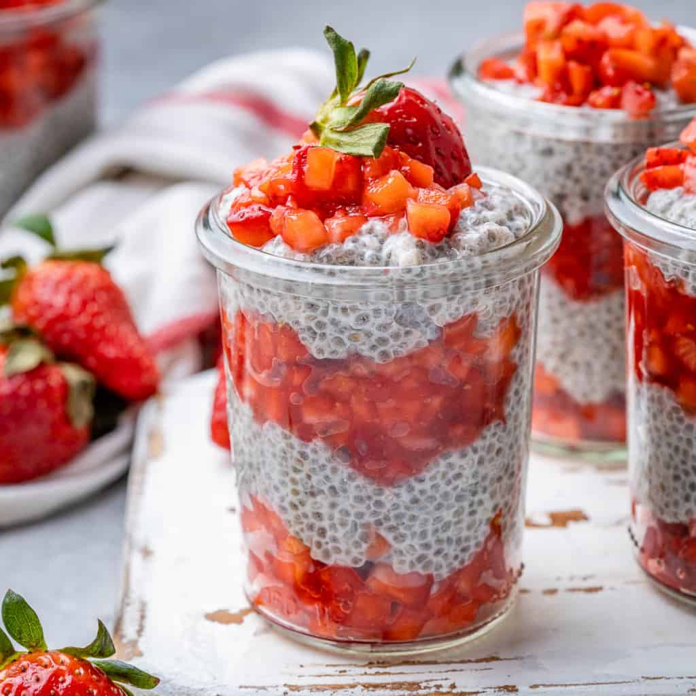
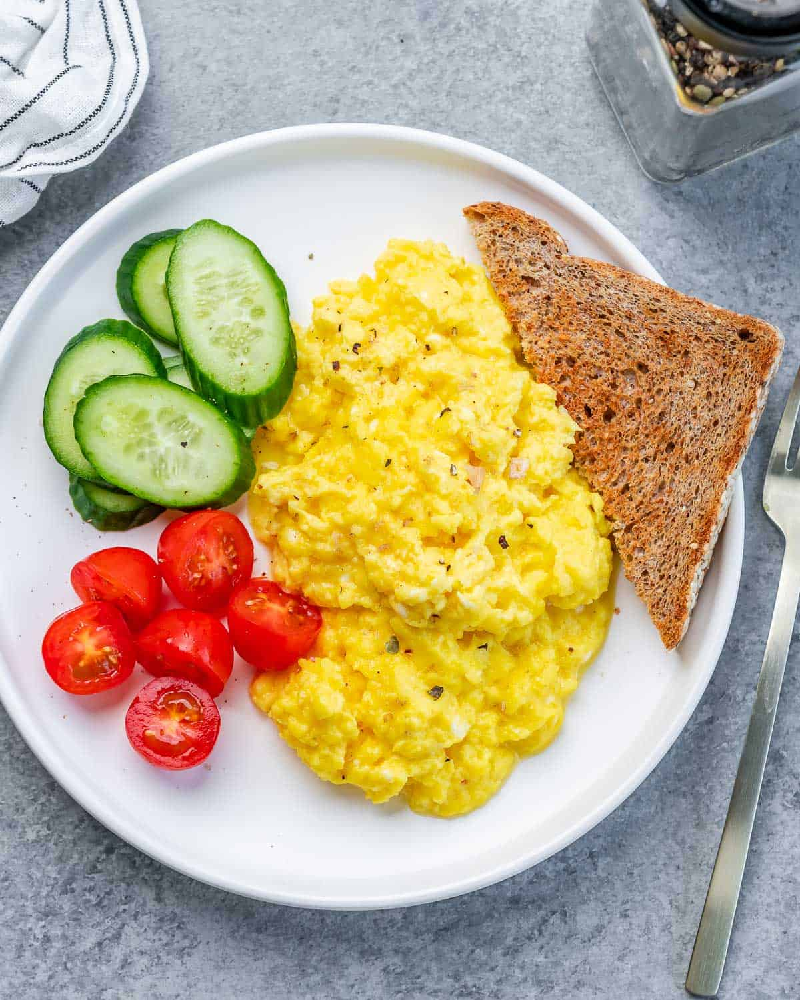
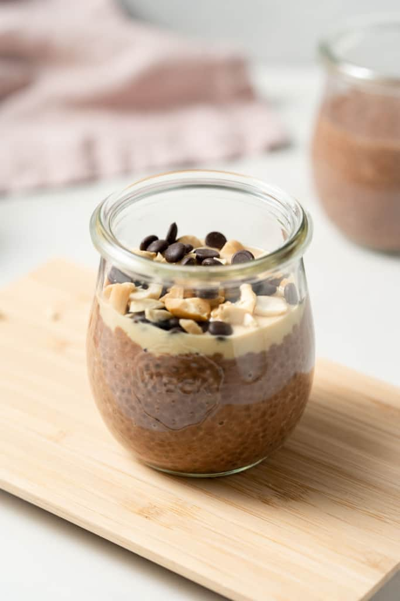
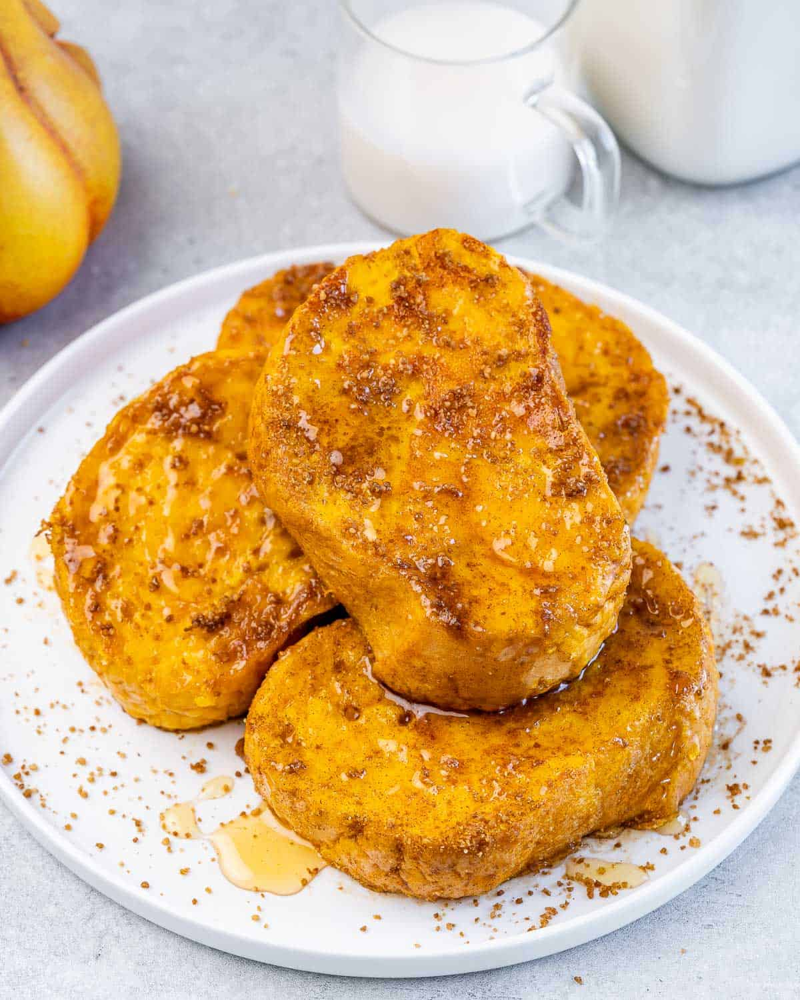

Strawberry Chia Seed Pudding

- Chia seeds: of course, this is the main ingredient and can’t be substituted. You may use your
favorite brand.
- Yogurt: You can use any flavored yogurt or brand you prefer. To keep it a plant-based breakfast, use
coconut or almond milk-based yogurt that’s vegan-friendly.
- Milk: Plant-based milk like almond or coconut milk works. Using 2% milk is also fine.
- Vanilla extract: this ingredient is needed if you don’t use vanilla-flavored yogurt. Otherwise, you
can skip it.
- Honey: we used honey, but for the plant-based option use maple syrup or agave.
- Strawberries: Any other fruit can be used.
Cottage Cheese Scrambled Eggs

- Eggs: Five large eggs are the base of this recipe. We recommend high-quality, pasture raised organic
eggs.
- Cottage cheese: Adds creaminess and extra protein to the scrambled eggs. Feel free to use low-fat,
fat-free or full-fat cottage cheese.
- Salt and pepper: To bring out delicious flavor!
- Olive oil: For cooking the eggs.
Peanut Butter Chia Pudding

- Milk: Use any milk you’d like to give this the perfect consistency.
- Cacao powder: For rich chocolate flavor.
- Chia seeds: essential ingredient in this recipe. They will absorb the liquid from the milk, plump up
and thicken the pudding.
- Peanut butter: Creamy nut butter makes this filling, and adds the perfect nutty flavor.
- Vanilla extract: Adds a boost of flavor.
- Sweetener: You can naturally sweeten this chia pudding with maple syrup, agave or honey.
Pumpkin French Toast

- For the custard: A mix of eggs, pumpkin puree, milk, and vanilla will coat each slice of bread and
give it an incredible pumpkin flavor.
- Sugar & spice mix: We’re dipping each slice of warm French toast in a mix of coconut sugar and
pumpkin spice for wonderful sweetness and even more pumpkin pie flavor! Use brown sugar or even granulated
sugar, if that’s what you have.
- Bread: Having amazing French toast is all about the bread! We recommend using brioche bread, Texas
toast, Challah, Sourdough bread, or French bread.